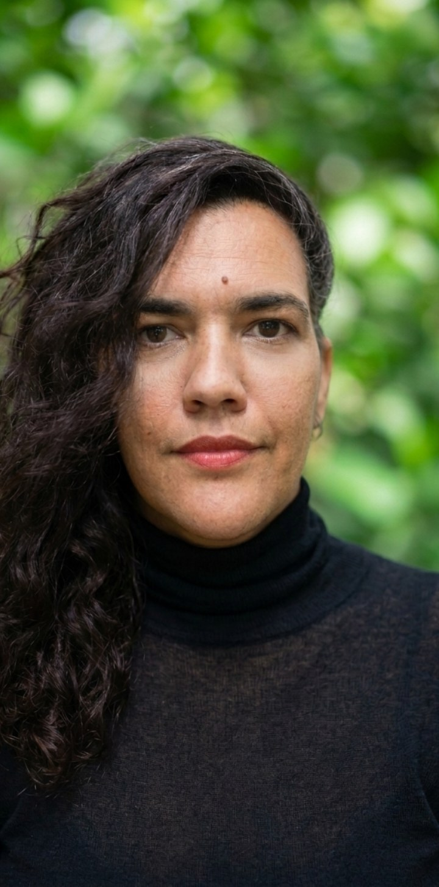

Reportagem & conteúdo
Apuração, entrevistas, pesquisa, redação e edição para veículos, organizações e projetos.
- Reportagens e conteúdos especiais
- Entrevistas e pesquisa de personagens
- Pesquisa documental
- Redação e edição
Jornalista com trajetória em reportagem, comunicação, pesquisa audiovisual e desenvolvimento de projetos. Nos últimos anos, concentrei minha atuação em meio ambiente, clima, cultura, educação e direitos humanos — trabalhando tanto na produção de conteúdo quanto na construção e articulação de projetos.

Meu trabalho combina apuração jornalística, pesquisa de conteúdo, comunicação e capacidade de circular entre pessoas, territórios e equipes. Tenho especial sensibilidade para a escuta em coletivos e contextos de culturas diversas, buscando compreender os modos de vida, os conflitos, os saberes e as perspectivas de quem vive os territórios. A partir dessa escuta, transformo experiências e materiais complexos em narrativas jornalísticas, conteúdos e projetos.
Apuração, entrevistas, pesquisa, redação e edição para veículos, organizações e projetos.
Estratégias e conteúdos para organizações e projetos que precisam comunicar temas complexos com clareza.
Pesquisa, concepção, articulação, produção e documentação de projetos culturais, socioambientais e autorais.
Minha experiência em campo é parte central do meu trabalho: ouvir comunidades, compreender contextos, acompanhar processos e construir narrativas a partir de quem vive as questões.
Projeto autoral desenvolvido no Amapá, com vinte dias de acompanhamento dos castanheiros da RDS Iratapuru, em parceria com a cooperativa COMARU e fotógrafo amazônico. Concebido de forma independente, resultou em publicações na National Geographic Brasil e em ((o))Eco, além de produção audiovisual e exposição na comunidade.
Série especial sobre as relações entre clima e sistemas alimentares, criada a convite do veículo.
Reportagem sobre inovação agroecológica na Amazônia e caminhos para uma produção sustentável.
Três anos de colaboração com foco em Amazônia, territórios indígenas e impactos climáticos.
Passagem pelo ClimaInfo, ampliando minha atuação em jornalismo climático e na cobertura das relações entre crise climática, políticas públicas, território, ambiente e sociedade.
Conheça o veículo →O jornalismo ambiental se tornou o centro da minha atuação nos últimos anos. A cobertura climática atravessa minhas reportagens sobre Amazônia, sistemas alimentares, agricultura, comunidades tradicionais e políticas ambientais.
Minha experiência reúne reportagem de campo, entrevistas com especialistas e lideranças, pesquisa documental e produção de narrativas sobre os impactos e as disputas em torno da crise climática.
Entre os veículos com os quais colaborei estão National Geographic Brasil, Mongabay Brasil, ((o))Eco, Nexo Jornal e ClimaInfo.
Em vez de apenas listar funções, estes projetos mostram o tipo de problema que consigo assumir, meu papel e o que entreguei. Minha experiência inclui também pesquisa de conteúdo, personagens e contexto para projetos audiovisuais e jornalísticos — uma competência que atravessa minha trajetória muito antes da atual especialização ambiental.
Meu papel: reportagem e produção de vídeo sobre hortas urbanas em São Paulo.
Escuta: foram escutadas lideranças e mulheres à frente de hortas de referência na cidade, acompanhando suas práticas, histórias e relações com os territórios.
Mostra: experiência de escuta territorial, pesquisa, entrevistas e construção de narrativa audiovisual a partir das pessoas que fazem as hortas urbanas acontecerem.
Ver no ((o))Eco →Meu papel: vídeo-reportagem para a Mongabay Brasil.
Mostra: trabalho de campo, escuta de personagens, apuração e construção audiovisual a partir do território.
Ver Mongabay Brasil →Meu papel: pesquisa de conteúdo e personagens para o vídeo de lançamento do projeto.
Mostra: capacidade de localizar fontes, personagens e contextos capazes de sustentar uma narrativa audiovisual.
Meu papel: chefia de pesquisa no documentário da Fundação Itaú, realizado pela Pródigo Films.
Mostra: pesquisa aprofundada, organização de informação, fontes e personagens para audiovisual.
Meu papel: escrita e desenvolvimento de projeto no Google News Initiative Startup Lab.
Mostra: pesquisa, desenvolvimento de produto jornalístico e articulação entre comunicação e território.
Meu papel: organização da feira e comunicação em redes sociais.
Mostra: capacidade de combinar operação, articulação, produção de conteúdo e comunicação digital em um projeto real.
Meu papel: entrevista com Davi Kopenawa e Luiz Bolognesi sobre o documentário A Última Floresta.
Mostra: experiência de entrevista com uma das principais lideranças indígenas do Brasil e cobertura de causas indígenas, cinema e defesa do território.
Read in English →Experiência em jornalismo, reportagem, produção editorial e narrativas de interesse público.
Produção de conteúdo para diferentes plataformas, cobertura em tempo real, comunicação institucional e comunicação socioambiental.
Experiência em gestão cultural, pesquisa, produção e desenvolvimento de projetos ligados à cultura, educação e direitos humanos.
Minha formação combina comunicação, gestão cultural, direitos humanos e experiências práticas de relação com o território.
Bacharelado em Jornalismo pela Faculdade Cásper Líbero.
Formação em Gestão Cultural na perspectiva dos Direitos Humanos pelo Sesc São Paulo.
Formação em Design Permacultural pelo Coletivo Permacultura em Parelheiros, conforme apresentada no portfólio de referência.
Disponível para acompanhar organizações de forma contínua em comunicação, além de reportagens, pesquisa e cobertura.